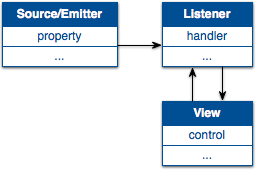

Built on Mootools
CIP is built on the Mootools Library. Mootools is an object-oriented library that makes writing complex Javascript a breeze. Mootools was chosen because of its simplicity, its modern, object-oriented idioms, and its roadmap. Not to mention its tight and knowledgeable community.
CIP includes the entirety of Mootools.Core and Mootools.More, which provides everything from extensions to Array, to classical inheritance, to drag & drop.
Tell me a little about yourself
CIP proudly borrows from Cocoa, Apple’s application development environment. Like Cocoa, CIP has clear, self-documenting classes and methods. One of the most powerful concepts it borrows is called key-value coding (KVC).
Key-value coding means you tell your class what properties it should have, optionally give them defaults,
and those properties, along with accessors and mutators, will be created for you. Furthermore, mutators
fire PropertyChanging and PropertyChanged events, which provide an elegant
solution to value binding without any complexity. Mootools’ provides classical inheritance,
so you can override the accessor and mutator methods as you see fit.
Example: KVC
var Dog = new Class({ Extends: CIObject, initialize: function(configuration) { this.parent(configuration); this.isA('Dog'); this.synthesize({ age: 1, sex: 'male', bark: 'Woof!' }, configuration); } }); var dog = new Dog({ sex: 'female', bark: 'Arf!!' }); dog.setSex('male'); dog.set('bark', 'Ruff!'); dog.getAge();
Fire Away
Events, along with key-value coding, are the backbone of data binding. While events are relatively new to Cocoa, Javascript users have been using events and event handlers since the dawn of HTML. CIP uses events in the same conventional way to achieve many goals.
An event is when one object lets other objects know something has happened. An event listener
lets a target object know it’s interested in a specific event it will fire. When that event is fired,
the event handler is the function called to take action. CIP defines many different events for the lifecycle
of an object — CIEvent.GotData, .AddedToDom, .Hiding, .Hidden
and .Rendered are just a few.
There is one event that every object will fire at some point — CIEvent.PropertyChanged.
Listeners, including the changing object, can listen for this event and update themselves accordingly. This
is called key-value observing (KVO), and the process of updating one object in response to another is called
binding.
Example: KVO & Binding
In this example, we have a Dog and a DogWalker. Using KVO, we can keep the dog constantly 5 paces ahead of its walker
(we say the dog’s paces property is bound to its walker’s paces property).
We also allow the walker to be changed and have the dog keep in step.
var DogWalker = new Class({ Extends: CIObject, initialize: function(name) { this.parent(); this.isA('DogWalker'); this.synthesize({ name: name, paces: 0 }); this.addEvent(CIEvent.PropertyChanged, this._pacesChanged); }, step: function() { this.setPaces(this.paces + 1); return this; }, _pacesChanged: function(property, newValue, oldValue) { if (property == 'paces') console.log(this.name + ' is now at ' + this.paces + ' paces'); }, }); var Dog = new Class({ Extends: CIObject, initialize: function(aWalker) { this.parent(); this.isA('Dog'); this.synthesize({ name: name, paces: 0, walker: null }); this._boundEventHandler = this._walkerChanged.bind(this); }, setWalker: function(newWalker) { if (this.walker) { this.walker.removeEvent(CIEvent.PropertyChanged, this._boundEventHandler); console.log(this.name + ' will no longer be walked by ' + this.walker.getName()); } this.set('walker', newWalker); console.log(this.name + ' will now be walked by ' + this.walker.name); this.walker.addEvent(CIEvent.PropertyChanged, this._boundEventHandler); this.setPaces(this.walker.getPaces() + 5); }, setPaces: function(newPaces) { this.set('paces', newPaces); console.log(this.name + ' is now at ' + this.paces + ' paces'); }, _walkerChanged: function(property, newValue, oldValue) { if (property == 'paces') this.setPaces(newValue + 5); } }); var joe = new DogWalker('Joe'); var kathy = new DogWalker('Kathy'); joe.setPaces(5); kathy.setPaces(15); var fido = new Dog('Fido'); fido.setWalker(joe); joe.step().step(); fido.setWalker(kathy); joe.step();